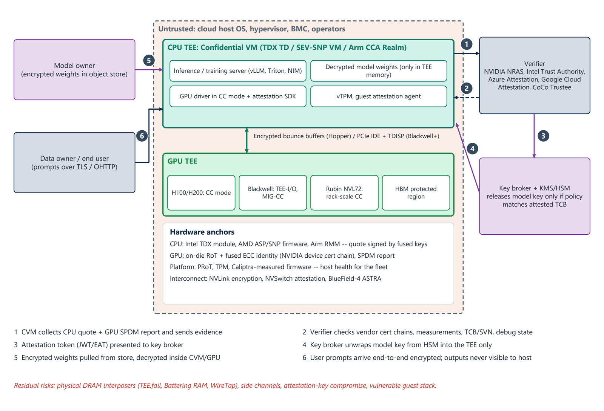

Chapter 9: Confidential Computing for AI¶
Confidential computing protects data in use by running workloads in hardware-isolated trusted execution environments whose memory is encrypted and whose configuration can be remotely attested before any secret is released. For AI this means that model weights and prompts can be processed on infrastructure the owner does not control, which matters for cloud-hosted frontier models, multi-party training and regulated inference. This chapter covers CPU TEEs, accelerator TEEs and trusted I/O, the attestation flow of confidential inference, the services and software that support it, and its limits.
9.1 CPU TEEs¶
| Technology | Vendor | Isolation unit | Memory protection | Attestation root | Trusted I/O |
|---|---|---|---|---|---|
| SGX | Intel | Process enclave | MEE or TME-MK; integrity on early parts | Intel-provisioned keys, DCAP | n/a |
| TDX 1.x and 2.x | Intel (4th-generation Xeon onwards; GA on 5th generation and Xeon 6) | VM (trust domain) | TME-MK AES-XTS with logical integrity | TDX module and SGX quoting enclave, Intel Trust Authority | TDX Connect (TDISP) |
| SEV-SNP | AMD (EPYC Milan onwards) | VM | AES (SME) and RMP integrity tables; ciphertext hiding (Turin) | ASP, VCEK or VLEK through the AMD key distribution service | SEV-TIO (TDISP) |
| CCA (Realms) | Arm (Armv9-A RME) | VM (Realm) | Granule protection tables and MEC encryption | RSE or HES, CCA platform token | RME-DA (device assignment) |
| Secure Execution | IBM Z and LinuxONE | VM | Hardware-encrypted guest memory | IBM host-key documents | Crypto Express HSM pass-through |
| CSV | Hygon (China) | VM | SEV-derived with SM4 | Hygon PSP | not stated |
| CoVE and AP-TEE | RISC-V (in development) | VM | Specification-defined | TSM attestation | CoVE-IO |
9.2 Accelerator TEEs and trusted I/O¶
A GPU TEE has to protect three things: the GPU's own memory, the CPU-GPU channel and the GPU-GPU fabric. NVIDIA Hopper solved the CPU-GPU channel with encrypted bounce buffers: the driver inside the confidential VM encrypts transfers with AES-GCM keys negotiated through SPDM, which costs some PCIe throughput. TDISP from PCI-SIG removes this overhead. The device is locked into a trusted state, its configuration is attested, and PCIe IDE encrypts traffic at line rate, so the device's DMA can reach TEE memory directly. Intel TDX Connect, AMD SEV-TIO and Arm RME-DA are the CPU-side halves of that arrangement. Blackwell is NVIDIA's first TEE-I/O-capable GPU, and Vera Rubin NVL72 extends confidential computing across the whole NVLink domain and the CPUs.
9.3 Confidential AI inference end to end¶
Figure 9.1 follows a confidential inference request. The cloud host OS, hypervisor, BMC and operators are all untrusted. Inside a CPU TEE (a TDX trust domain, SEV-SNP VM or Arm CCA Realm) runs the inference server with a GPU driver in CC mode, an attestation SDK, a vTPM and a guest attestation agent; the decrypted model weights exist only in TEE memory and in the GPU's protected HBM region. The hardware anchors are the CPU's TDX module, ASP or Arm RMM (quotes signed by fused keys), the GPU's on-die RoT with its fused identity and SPDM report, the platform's PRoT, TPM and Caliptra-measured firmware, and the interconnect protections (NVLink encryption, NVSwitch attestation, BlueField-4 ASTRA).
The protocol has six steps. (1) The confidential VM collects the CPU quote and the GPU SPDM report and sends the evidence. (2) A verifier checks vendor certificate chains, measurements, TCB and security version numbers, and debug state. (3) An attestation token (JWT or EAT) is presented to the key broker. (4) The key broker unwraps the model key from the HSM into the TEE only. (5) Encrypted weights are pulled from the store and decrypted inside the VM and GPU. (6) User prompts arrive end-to-end encrypted, and outputs are never visible to the host. The residual risks are physical DRAM interposers (TEE.fail, Battering RAM, WireTap), side channels, attestation-key compromise and a vulnerable guest stack.

9.4 Attestation services and confidential-AI software¶
| Category | Offerings |
|---|---|
| Hardware-vendor verifiers | NVIDIA Remote Attestation Service (NRAS) and the nvTrust local verifier, RIM and OCSP services; Intel Trust Authority; AMD Key Distribution Service (VCEK and VLEK certificates) |
| Cloud attestation and CC services | Microsoft Azure Attestation, confidential VMs and confidential GPU VMs; Google Cloud Attestation, Confidential Space, A3 Confidential VMs; AWS Nitro Enclaves attestation with KMS; Oracle and IBM Cloud CC offerings |
| Open source | CNCF Confidential Containers (CoCo) and Trustee (key broker and attestation service); Kata Containers; Veraison; Keylime; COCONUT-SVSM; Microsoft OpenHCL paravisor; Enarx |
| Commercial confidential-AI platforms | Fortanix, Edgeless Systems (Constellation, Contrast, Privatemode AI), Anjuna Seaglass, Opaque Systems, Decentriq, Tinfoil, Phala Network, Super Protocol, Duality |
| AI-serving integration | NVIDIA NIM and Triton in CC mode, vLLM in confidential VMs, Azure AI confidential inferencing, Apple PCC and Meta's private processing as reference designs |
| Industry bodies | Confidential Computing Consortium (Linux Foundation), IETF RATS, OCP Security, PCI-SIG, TCG |
9.5 Limits of current TEEs¶
Physical memory attacks. Deterministic AES-XTS memory encryption (Intel TDX and SGX scalable mode, AMD SEV-SNP) leaks the equality of ciphertexts. DDR4 and DDR5 interposers (WireTap, Battering RAM, TEE.fail, 2025) extracted secrets and even attestation keys. Mitigations are physical-access controls in AI halls, integrity-protected memory encryption in future CPUs, and short attestation-key lifetimes. Side channels and microarchitecture. Speculative execution, cache, power and frequency side channels (Downfall, CacheWarp, Heckler and others) keep TEE trusted computing bases on a patch-and-re-attest cycle, and verifiers must enforce minimum TCB and security version numbers. Trusted computing base size. The guest OS, drivers, ML frameworks and model-serving code all sit inside the TEE, so a vulnerable inference server leaks weights regardless of hardware. Attestation operations. Reference values (RIMs and CoRIM) and revocation must be fed continuously, and a verifier that accepts anything gives no protection. Accelerator gaps. Many accelerators lack a public TEE, and integrity guarantees may be partial, as in AMD's note on the MI455X against a malicious hypervisor.
9.6 Summary¶
- Confidential computing keeps weights and prompts encrypted in use, and releases secrets only after remote attestation of a TEE.
- CPU TEEs (TDX, SEV-SNP, CCA) isolate VMs; GPU TEEs protect GPU memory, the CPU-GPU channel and the GPU-GPU fabric; TDISP with IDE lets devices join the TEE at line rate.
- In confidential inference the key broker releases the model key from an HSM only against a verified composite attestation of CPU and GPU.
- Limits remain: physical interposers, side channels, a large TCB, attestation operations and accelerators without a public TEE.
9.7 Exercises¶
-
Why did Hopper need encrypted bounce buffers, and what does TDISP change?
Answer
Without a trusted device interface, the CPU-GPU channel had to be protected in software: the driver in the confidential VM encrypts transfers with AES-GCM keys negotiated through SPDM, costing throughput. TDISP locks the device into a trusted state with attested configuration, and IDE encrypts traffic at line rate so DMA can reach TEE memory directly.
-
In the confidential inference flow, which component decides whether the model key is released, and on what condition?
Answer
The key broker with KMS and HSM, which releases the model key only if the policy matches the attested TCB shown in the verifier's attestation token.
-
Why can an inference-server vulnerability leak weights even on the best hardware?
Answer
The guest OS, drivers, ML frameworks and serving code run inside the TEE, so the hardware protects them from outside the TEE but not from bugs in them.
-
What must a verifier be fed continuously, and why?
Answer
Reference values (RIMs and CoRIM) and revocation information. A verifier that accepts anything, or accepts outdated measurements, gives no protection.